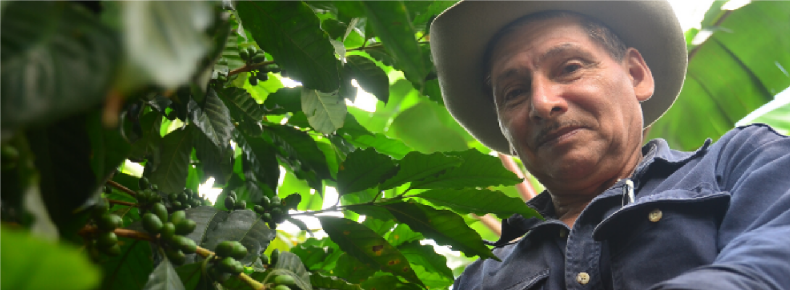

Good Food,


Good Food,
Good Life
Desarrollando todo el poder de la alimentación para mejorar la calidad de vida, hoy y para futuras generaciones.


Desarrollando todo el poder de la alimentación para mejorar la calidad de vida, hoy y para futuras generaciones.


NESTLÉ® tiene para ti un mundo de consejos, información, contenidos y promociones que te encantarán. Mantente al día con todo lo nuevo y no te pierdas lo que viene suscribiéndote hoy mismo.